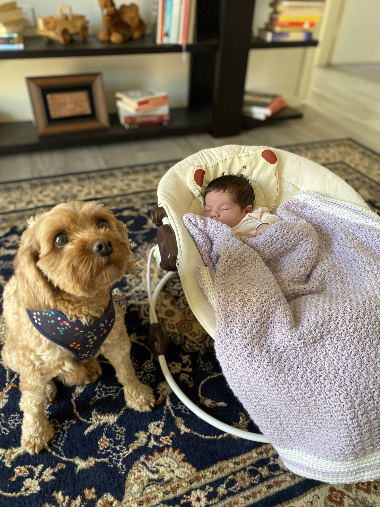

Hi There. I'm Frank.
Check out my Portfolio site
Have a look around.
I'm currently a student of Bachelor of IT at Charles Sturt University.
I also have extensive experience in web development, and my goal is to to become a 10x engineer so that i can use my skills to create amazing AI technology.
This is a brief summary of my skill set but you can learn more if you want to, as long as you buy me a coffee, please contact me!!
- Phone:0448 887 888
- Email: frank@frank.com.au
Skills to Impress Potential Employers at a Flying Taxi Company
Advanced Aerodynamics Knowledge
Understanding of complex aerodynamic principles applicable to flying taxis, including lift, drag, and thrust dynamics. Contributed to the design of an award-winning aerodynamic vehicle model at a university competition.
Electric Propulsion Systems
Experience with electric propulsion technologies, including battery management systems and electric motor tuning. Led a team project to develop a prototype electric propulsion system, showcased at the Tech Innovators Fair 2023.
Software Development for Autonomous Navigation
Proficient in programming autonomous navigation systems using Python and ROS. Developed a simulation for autonomous flying taxis in urban environments, improving route efficiency by 30%.
User Experience Design for In-Flight Systems
Designed user interfaces for in-flight entertainment and control systems, focusing on ease of use and accessibility. Conducted user testing sessions to gather feedback and iteratively improve the designs.
My plans for 2024?
"Give me six hours to chop down a tree and I will spend the first four sharpening the axe".
Abraham Lincoln
Key areas of interest for improving my professional skills
- AI and Machine Learning
- Artificial Intelligence and Machine Learning are transforming the technology landscape, enabling new levels of automation, predictive analysis, and intelligent decision-making.
- Geospatial data in space applications
- Geospatial data, with its ability to provide detailed geographical and temporal insights, plays a crucial role in space exploration, aiding in satellite navigation, planetary mapping, and understanding spatial phenomena.
- UI design
- Building highly functional dynamic user interfaces
Other interests?
I am focused on improving my carreer and these are the things I do in my spare time.
View Full Image- Food
- Italian
- Korean
- Sport
- Darts
- Hot dog eating
- Hobbies
- Looking after my Cavoodle Yoshi (pictured above)
- Walking